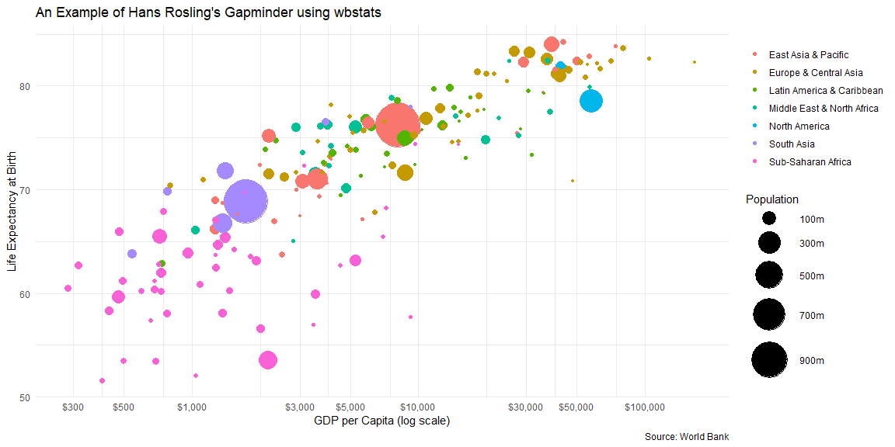
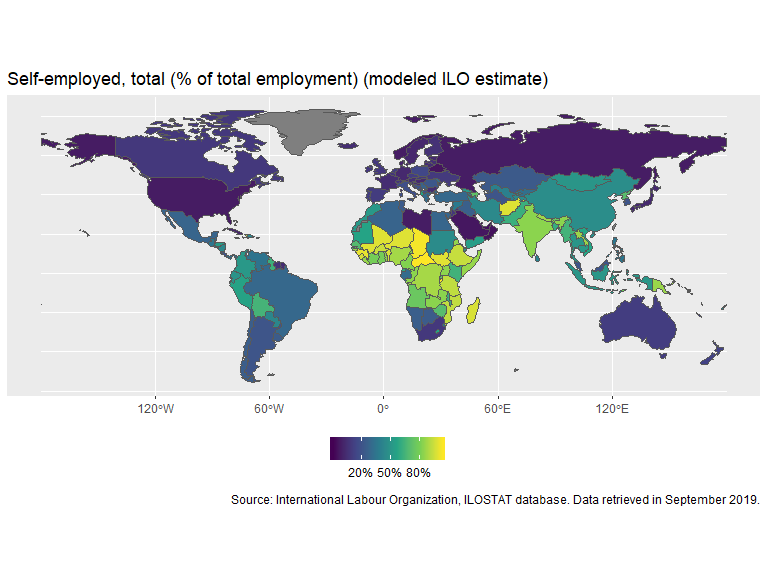

You can install:
The latest release version from CRAN with
or
The latest development version from github with
Downloading data from the World Bank
library(wbstats)
# Population for every country from 1960 until present
d <- wb_data("SP.POP.TOTL")
head(d)
#> # A tibble: 6 x 9
#> iso2c iso3c country date SP.POP.TOTL unit obs_status footnote
#> <chr> <chr> <chr> <dbl> <dbl> <chr> <chr> <chr>
#> 1 AW ABW Aruba 2019 NA <NA> <NA> <NA>
#> 2 AW ABW Aruba 2018 105845 <NA> <NA> <NA>
#> 3 AW ABW Aruba 2017 105366 <NA> <NA> <NA>
#> 4 AW ABW Aruba 2016 104872 <NA> <NA> <NA>
#> 5 AW ABW Aruba 2015 104341 <NA> <NA> <NA>
#> 6 AW ABW Aruba 2014 103774 <NA> <NA> <NA>
#> # ... with 1 more variable: last_updated <date>
Hans Rosling’s Gapminder using wbstats
library(tidyverse)
library(wbstats)
my_indicators <- c(
life_exp = "SP.DYN.LE00.IN",
gdp_capita ="NY.GDP.PCAP.CD",
pop = "SP.POP.TOTL"
)
d <- wb_data(my_indicators, start_date = 2016)
d %>%
left_join(wb_countries(), "iso3c") %>%
ggplot() +
geom_point(
aes(
x = gdp_capita,
y = life_exp,
size = pop,
color = region
)
) +
scale_x_continuous(
labels = scales::dollar_format(),
breaks = scales::log_breaks(n = 10)
) +
coord_trans(x = 'log10') +
scale_size_continuous(
labels = scales::number_format(scale = 1/1e6, suffix = "m"),
breaks = seq(1e8,1e9, 2e8),
range = c(1,20)
) +
theme_minimal() +
labs(
title = "An Example of Hans Rosling's Gapminder using wbstats",
x = "GDP per Capita (log scale)",
y = "Life Expectancy at Birth",
size = "Population",
color = NULL,
caption = "Source: World Bank"
) 
Using ggplot2 to map wbstats data
library(rnaturalearth)
library(tidyverse)
library(wbstats)
ind <- "SL.EMP.SELF.ZS"
indicator_info <- filter(wb_cachelist$indicators, indicator_id == ind)
ne_countries(returnclass = "sf") %>%
left_join(
wb_data(
c(self_employed = ind),
mrnev = 1
),
c("iso_a3" = "iso3c")
) %>%
filter(iso_a3 != "ATA") %>% # remove Antarctica
ggplot(aes(fill = self_employed)) +
geom_sf() +
scale_fill_viridis_c(labels = scales::percent_format(scale = 1)) +
theme(legend.position="bottom") +
labs(
title = indicator_info$indicator,
fill = NULL,
caption = paste("Source:", indicator_info$source_org)
)